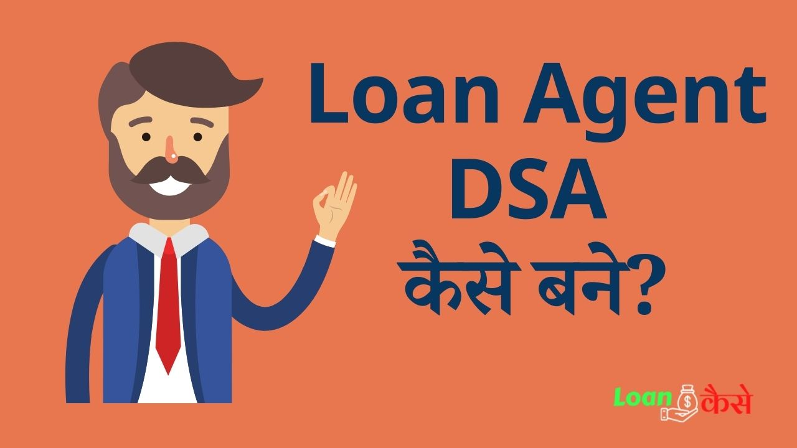

Loan Agent kaise bane in hindi ये समझने से पहले आइए जानते हैं कि Loan agent होते कौन है? दोस्तों Loan Agent जो होते हैं उनको DSA (Direct Selling Agent) भी बोला जाता है जिन्हें हम short form में DSA भी कहते हैं ।या Loan agent को Home loan counselor, Call Loan counselor , Loan counselor ये सारे अलग अलग नाम से Loan Agent को बुलाया जाता है ।
इन Loan Agent को Banks अपने साथ काम करने के लिए बुलाती है ।ये Loan agents और Bank कर्मियों की तरह Permanent Staff नहीं होते हैं।और नाहीं इन्हें Bank की ओर से कोई Fixed monthly Salary मिलती है ।
अब बात आती है कि Loan agent bane क्यों जब बैंक salary ही नहीं देगी ,तो दोस्तों बात ऐसी है कि ये Loan Agent जितने Loan बेचते हैं । मतलब इन Loan एजेंट के द्वारा जितने लोग या company को Loan मिलेगा,Bank उसका कुछ हिस्सा इन Loan Agents को पैसे देगी इसी तरह से Loan दिलाकर Loan agent की अच्छी ख़ासी कमाई हो जाती है ।
{kind=link}

Loan Agents Banks के कौन कौन से Product बेच सकते हैं?
- Generally DSA (Direct selling agents ) Home loans, car loans, personal loans दिला सकते हैं ।
- Loan के अलावे Loan agents Bank के FD (fixed Deposite),RD(Recuring Deposite) भी बेच सकते हैं । मतलब की किसी भी वक्ति या company को ये Loan agents Banks में fixed Deposite करवाकर भी commission बना सकते हैं ।
- Kuchh Non-Banking product जैसे Credit Card Customer को बैंक से दिलने में मदद कर सकते हैं इससे Loan agent कि कमाई होती हैं ।
- इसके अलावे Bank के Insurance बेचकर loan agent kamai कर सकते हैं ।
Loan Agent Banane के क्या फ़ायदे हैं ?(Advantages Of Loan Agents)
- दोस्तों Loan agent बनना और इसमें फ़ायदा कितना होगा ये पूरी तरह से आपके ऊपर depend करता है ,कि आप कितना मेहनत करते हो ? आपक जितना banks के Products को sell करोगे उतना आपको इसमें commission मिलेगा । तो Loan agent banane के बहुत फ़ायदे हैं ,क्योंकि इसमें unlimited income हैं ।कोई limit नहीं है आप जितना मेहनत करोगे उतने आपके पैसे बनेंगे।
- Loan agent बनने का सबसे बरा फ़ायदा ये है कि इसमें कोई timing नहीं है जब मन करे तब काम करो इसमें office या bank के खुलने या बंद होने से कोई मतलब नहीं है ।
हमारे कुछ और पोस्ट
१।ICICI Bank Instant Personal Loan Kaise मिलता है?
२।Loan क्या है (What is Loan)?
३। Early Salary Application Se Loan Kaise ले सकते हैं?
Loan agent Bankar क्या काम करना परता है ?
- loan agent का सबसे पहला काम ये पता लगाना होता है कि किसको Loan की आवश्यकता है।
- उसके बाद जिन्हें Loan लेना होता है उनसे contact करते हैं और loan application form भरकर ज़रूरी documents (जैसे KYC डॉक्युमेंट income proof etc) जो customer ने दिए हैं वो सभी सही हैं या नहीं ये verify करने के बाद loan application form के साथ सभी documents लगाकर Loan process hone के लिए बैंक में जमा करवाते हैं।
- सभी Paper works और verifications हो जाने के बाद Loan department की ओर से जब customer को Loan approved होकर Loan amount successfully मिल जाता है तब Loan agent या DSA (Direct selling agents ) को commission मिलता है ।
Loan Agent को बैंक कितना Commission देता है ?
- Home Loan की बाँट करें तो कुछ Banks 0.25% to 0.40% तक मिलता है ।
- वही कुछ Private banks 0.5% to 0.70% तक commission देते हैं ।
Loan Agent बनने के लिए शैक्षणिक योग्यता क्या होनी चाहिए?(MInimum Educational Qualification For Loan Agent)
बस तो सबसे पहले हम आपको बता दें कि आजकल लोन एजेंट का डिमांड काफी ज्यादा बढ़ गया है , अगर आपको लोन एजेंट बनना है तो आपको कम से कम ग्रेजुएट होना जरूरी है ,यानी कि भारत के किसी भी विश्वविद्यालय से कम से कम 50% अंकों के साथ स्नातक की डिग्री आपके पास होनी ही चाहिए।
लोन एजेंट बनने के लिए आप किसी भी विषय में स्नातक की डिग्री ले सकते हैं, अगर आप कॉमर्स के किसी विषय में स्नातक करते हैं तो आपको लोन एजेंट बनने में थोड़ी आसानी जरूर हो जाएगी क्योंकि कॉमर्स विषय से स्नातक करने का मतलब है कि आपको बैंकिंग के क्षेत्र में अन्य विषयों वाले कैंडिडेट से ज्यादा नॉलेज होगा इसीलिए आपको ज्यादा वेटेज दिया जा सकता है।
स्नातक पास करने के बाद आपको बैंकिंग और फाइनेंस (Banking and Finance Course) का कोर्स फी किसी संस्थान से करना होगा आज कल बैंकिंग और फाइनेंस का कोर्स काफी ज्यादा ट्रेंडिंग में चल रहा है यह कोर्स करने के लिए आप बैंकिंग और फाइनेंस कोर्स गूगल पर भी सर्च कर सकते हैं।
Loan Agent Kaise Bane-DSA Registration Process
Doston जैसा की आपको पता होगा हमारे यहाँ दो तरह के banks चलते हैं ।एक Private sectors bank और Public sector banks इन दोनो के अपने अपने Loan agents banane के rules हैं ।
Private bank men loan agent Kaise bane?
- सबसे पहले बात करते हैं की Private sector banks में Loan Agent Kaise bane:- दोस्तों प्राइवट banks जैसे HDFC Banks ,ICICI Banks इनमे Loan agent बनने के लिए आपको इन Banks के website पर जाने के बाद Associate with us or affiliated या earn with us या Become a member इस तरह का Link दिखेगा जहाँ जाकर आप अपने details भरकर Loan agents banane के लिए apply कर सकते हैं । इन Banks में आप loan agents के लिए कभी भी apply कर सकते है ।
Public Sector bank men loan agent Kaise bane?
- अब बात करते है Public Sector Banks के Loan agent बनने की यह loan agent बनना थोरा मुसकिल होता है । क्योंकि इसमें धरल्ले से किसी को भी Loan agent नहीं बना दिया जाता है ।अगर आप Public sector banks जैसे की Bank of baroda, State bank of India इन banks में Loan agent kaise bane ये सोच रहे हैं तो ,आप अपने आसपास के इन बैंकों में समय समय पर जाकर कांटैक्ट करते रहिए।
क्योंकि जब इन banks को Loan agent banane की आवश्यकता होती है तो ये Newspaper में Notice देते हैं ।उस नोटिस में यह भी लिखा होता है की Loan agent kaise banana है ।Loan agent banane के लिए आपको क्या क्या दूकमेंट्स देना है ।तो आप इस तरह से इन Banks में अप्लाई करके Loan agents बन सकते हैं ।क्योंकि बिना advertisement के ये banks Loan agent नहीं चुन सकती है । - loan agent के लिए अप्लाई कर देने के बाद आपके documets का verification होता है ।
- उसके बाद आपका CIBIL score चेक किया जाता है ।
- सबकुछ सही होने के बाद एक comittee का गठन होता है और comittee का निर्णय होने के बाद Loan agent रखा जाता है
इस तरह से आप Loan agent ka application करके laon agent ban sakte हैं ।
Loan Agent contact number Kaise Nikale?
अगर आप अपने शहर के लोन एजेंट या (DSA) का कांटैक्ट नम्बर पता करना चाहते हैं तो आप निम्न तरीक़े से पता कर सकते हैं
- आपको सबसे पहले ये Deside करना है की आपको किस बैंक के लोन एजेंट का नम्बर चाहिए उस बैंक के कस्टमर करे में कॉल करेंगे तो आपको लोन एजेंट का नम्बर मिल जाएगा
जैसे :-+91 9000012345 (EXAMPLE) - या आप उससे भी आसानी से अपने आसपास के लोन एजेंट का नम्बर पता करना चाहते हैं तो सबसे आसान है आप गूगल में सर्च करें लोन एजेंट कांटैक्ट नम्बर अपने आप आपके पास ढेर सारे लोन एजेंट के नम्बर मिल जाएँगे।
लोन एजेंट (DSA) से संबंधित प्रश्नों के जवाब
लोन एजेंट (DSA) कैसे काम करता है?
उत्तर: लोन एजेंट (DSA) उपभोक्ताओं की आर्थिक आवश्यकताओं को समझने के लिए उनके पास समय लेता है और उन्हें ऋण प्रदाताओं के साथ मिलाकर सही ऋण का चयन करने में मदद करता है। यह उन्हें उचित डॉक्यूमेंटेशन प्रदान करता है और ऋण प्रक्रिया में उनकी मदद करता है।
लोन एजेंट (DSA) की योग्यता क्या है?
उत्तर: लोन एजेंट (DSA) की योग्यता में वित्तीय ज्ञान, आर्थिक सलाह देने की क्षमता, अच्छी संवेदनशीलता और मदद करने की इच्छा शामिल होती है। वे उपभोक्ताओं के साथ अच्छी बातचीत करने, उनकी आर्थिक जरूरतों को समझने और उन्हें सही वित्तीय सलाह प्रदान करने में कुशल होते हैं।
conclusion :-
तो दोस्तों आज आपने जाना की Loan agent kaise bane ,Loan agent बनने के क्या फ़ायदे है ? Loan agent को कौन कौन सा कम करना परता है ,Loan agent bankar कितना पैसा कमाया जा सकता है । Loan agent बनने के लिए appply कैसे करें ।